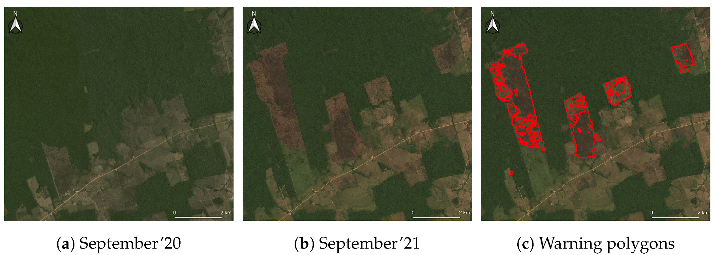
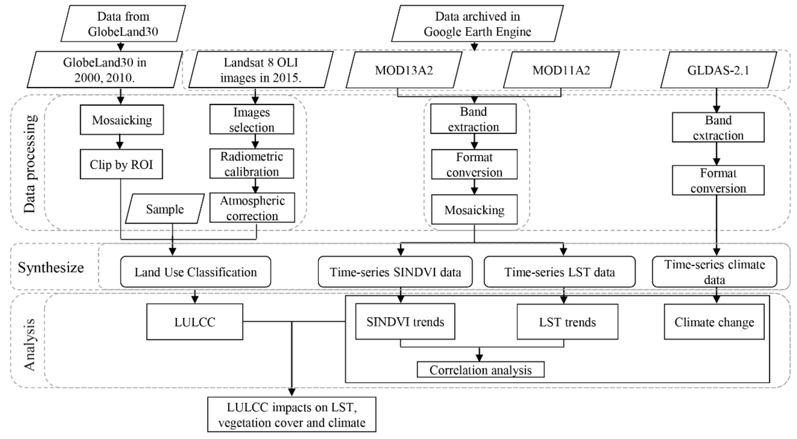

5 Google Earth Engine
5.1 What is Google Earth Engine?
Google Earth Engine (GEE) is a cloud-based web application that can able to access large amounts of geospatial datasets and carry out analysis on these data without hosting these large datasets in local computers. It is designed not only for researchers, but for anyone to gain access to high-performance computing resources and share them easily through its own interactive application development tools.
GEE is a game changer in terms of geospatial analysis because of its unique architecture - users interact with GEE through Javascript code editor and write scripts that define the data used and what analysis to carry out (client side), and the script is sent to Google’s cloud servers for processing (server side), before results are computed and visualization is displayed back on the code editor/maps on the client side.
Some of the features of GEE can be found below
The resolution of images on GEE is set by output and not input; it automatically adjusts the resolution by using image pyramiding based on the closest scale used in the analysis and resamples as needed (default nearest neighbour method). This reduces memory and processor demands, leading to quicker visualisation. However, this can be a problem for users who wants to a specific resolution, in that case they would need to use reproject().
GEE is also very straightforward when it comes to projection - it automatically converts to WGS84 for all display and visualisation so you don’t have to set any projections.
GEE is a one-stop web application which can incorporate all steps in a geosptial analysis process including:
- Reading in data (image collection) and filtering based on conditions (cloud coverage, time period, regions etc)
- Operations to manipulate the data including geometry operations, machine learning, deep learning etc
- Host outputs in terms of geospatial applications, dashboards, online charts
The power of GEE lies in being able to handle all the different functions across different datasets for multiple sensors across 40+ years, which opened up new possibilities in geospatial analysis such as real-time environmental monitoring. This has real policy impacts for governments as they are able to use GEE to set up and designate protection zones for example.

5.2 Applications
As mentioned earlier, the introduction of GEE meant that large amount of remote sensing data across a long time period can now be accessed and analysed without downloading individual image into local computers, which enables researchers to focus on the front-end processing and analysis without worrying about the back-end data acquisition.
One of the biggest application of GEE is in the Land Use/Land Cover (LULC) field, where researchers can now examine LULC changes across a longer time period, which is incredibly important especially when analyzing processes that occur over time, such as urbanisation, hydrological processes, and climate change. GEE offers unprecedented coverage across multiple sources, time and geographical range which makes it suitable to analyse LULC changes and its impact. The capabilities of GEE is what made research done by Hao at al. (2019) possible, where they analysed the impact of the Three Gorges Reservoir Catchment area across 15 years based on land use changes and climate variation. The authors integrated the use of GEE with GlobeLand30, a dataset developed by China to achieve a full coverage of 15 years since GEE’s Landsat 8 data can fill in missing images from GlobeLand30’s dataset. The figure below shows how a typical GEE workflow might look like for a LULC analysis case.

Using an extended time period in their research, the authors are able to analyse differences in LULC, vegetation cover and climate and how the Three Gorges Dam project have caused extensive changes in the local region, which involve massive loss of grassland, cultivated land and forest in specific counties. But at the same time, the authors could also evaluate efforts by the government to restore vegetation in the area, identifying areas with improved LST. This highlights GEE’s advantages - real time continuous monitoring of resources at a global scale which is by far its most attractive feature.
5.3 Reflections
I was quite excited to try out GEE this week as I was not aware of its existence when working with remote sensing data a few years back; it seems that this application is too good to be true - it has 40+ years of remote sensing data, no downloads required, and it even has APIs to enable users to build dashboards and interactive maps! (which is the goal of CASA0025 Building Spatial Applications)
However, as I went through the practical, I realized that GEE is not a straightforward tool to use. Beside needing to use its Javascript code editor to run the script (although a python API is available as well), there are several restrictions with using GEE:
- Image analysis is limited to tools within the GEE API - several advanced atmospheric correction options are not available unless it is implemented manually; to develop new tools require understanding the back-end server side algorithms
- There is an issue with data protection - although you can upload up to 250GB of user data, these data are stored in a private company (Google) servers which is against data sovereignty and security policies for some governments, which also limits its original purpose of making geospatial analysis accessible for many, including informing policies.
- Data mining models for classification are also limited to SVM, CART and RF which may not be sufficient for current advancements in image classification such as Convolutional Neural Network/ Deep learning methods
These limitations add to the steep learning curve of using GEE, which I feel is still out of reach to many unless you are a developer or researcher. While it has made remote sensing data more accessible and is able to ingest large amounts of data and compute with way lesser time, to effectively utilise its capabilities require lots of time and effort trying to understand its algorithms and architecture.
Another important implication from the introduction of GEE is the potentially widening knowledge gap of using GEE between developed and developing countries. Despite GEE’s claims of accessibility for everyone, uptake of GEE in developing countries research has been slow due to lack of technical skill support, and more importantly, a lack of collaborations and lacking internet infrastructure (Vijayakumar, 2024). This is a real issue which requires targeted interventions to bridge the digital divide and ensure equitable access to geospatial technology.
5.4 References
Doblas, J., Reis, M.S., Belluzzo, A.P., Quadros, C.B., Moraes, D.R., Almeida, C.A., Maurano, L.E., Carvalho, A.F., Sant’Anna, S.J. and Shimabukuro, Y.E., 2022. DETER-R: an operational near-real time tropical forest disturbance warning system based on Sentinel-1 time series analysis. Remote Sensing, 14(15), p.3658.
Hao, B., Ma, M., Li, S., Li, Q., Hao, D., Huang, J., Ge, Z., Yang, H. and Han, X., 2019. Land use change and climate variation in the three gorges reservoir catchment from 2000 to 2015 based on the Google Earth Engine. Sensors, 19(9), p.2118.
Vijayakumar, S., Saravanakumar, R., Arulanandam, M. and Ilakkiya, S., 2024. Google Earth Engine: empowering developing countries with large-scale geospatial data analysis—a comprehensive review. Arabian Journal of Geosciences, 17(4), p.139.